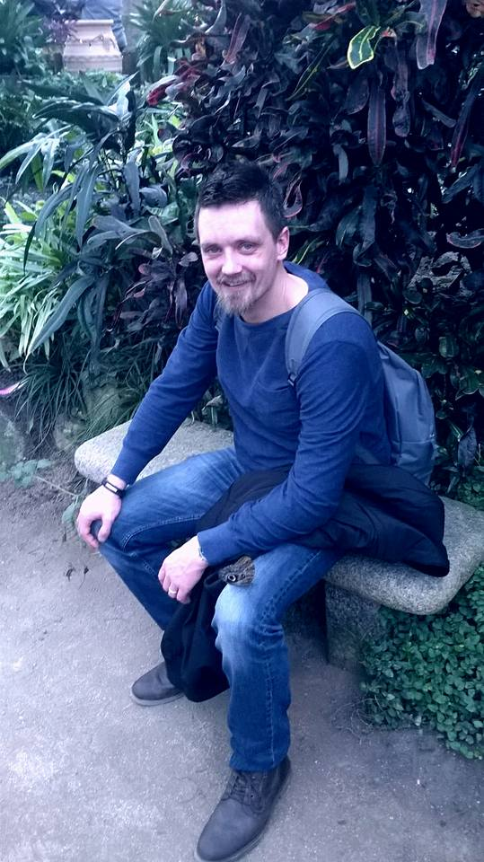

Ik ben 37 jaar ik volg op het moment een opleiding bij NHA als webdesigner.Op het moment werk ik als constructie bankwerker,ik ben net een paar maanden begonnen met deze nieuwe baan.Ik was hiervoor in de productie van aluminium kozijnen bij Frontlijn BV.Ik heb dit werk gedaan voor 5 jaar,ik realiseerde me dat ik niet nog een aantal jaar zwaar fysiek werk wil doen. Daarom heb ik de keuze gemaakt om een opleiding te doen als webdesigner.Ik vindt het intresant om een eigen website te kunnen bouwen vanuit niks met codes een mooie site te maken. Het werk wat ik op dit moment doe vindt ik ook leuk om te doen maar is ook fysiek zwaar werk maar we maken wel hele mooie dingen,alle staal platten aan elkaar lassen enige nadeel is dat je zo smerig wordt. In mijn vrije tijd naast mijn 40 uur werkweek ga ik graag naar buiten met mijn dochter ze is 1,5 jaar.of ik zit thuis leren voor mijn opleiding,gamen vindt ik ook leuk.Ik ben op het moment ook bezig om mijn moter rijbewijs
